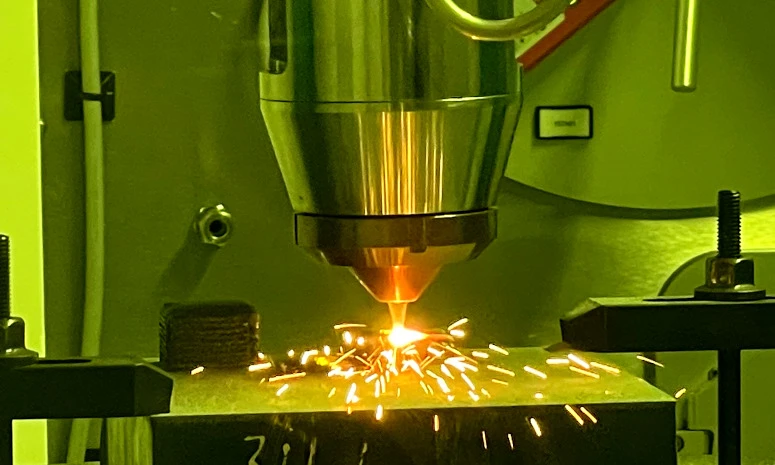

I am a Research Fellow at Nanyang Technological University, Singapore, working with Prof. Xuan Liang. My research interests include physics-informed machine learning (PIML), industrial AI, AI safety and trustworthiness, manufacturing process modelling and monitoring, and prognostics and health management (PHM). At NTU, I focus on predicting thermal and deformation fields in metal additive manufacturing using PIML and other AI methods.
My broader research addresses process modelling, fault detection, degradation assessment and remaining useful life prediction when data are limited or operating conditions vary. Applications span semiconductor manufacturing, aerospace, power electronics and battery systems, supporting digital twins and predictive maintenance.
Previously, I was a postdoctoral researcher at Politecnico di Milano. I also earned my Ph.D. there, under the supervision of Piero Baraldi and Enrico Zio. Further details are available in my CV.
Project Experience

PIML for metal additive manufacturing
2026–present · NTU
Thermal-field and deformation prediction for additive manufacturing using physics-informed neural networks and neural operators combined with transfer learning. This work is part of a Singapore Ministry of Education project on simulation, structural design and process optimization.
SAFEPOWER
2025–2026 · European Union
Degradation assessment and remaining useful life prediction for power electronics, S-parameter-based device monitoring, and reinforcement learning for converter limp-mode management. This work is conducted in collaboration with the University of Warwick (UK), the University of Technology Tarbes Occitanie Pyrenees (UTTOP, France), and Power Electronics España, S.L.
Anomaly detection for semiconductor manufacturing using pretrained vision–language representations, in collaboration with Infineon Technologies Austria.
Temperature estimation, health assessment and remaining useful life prediction for electronic components, including IGBTs used in induction cooktops. This work is conducted in collaboration with BSH Electrodomésticos España (Spain).
Transferring health assessment between operating domains by combining shared representations, distribution alignment and physical degradation dynamics. The aim is to make use of labelled source data when health labels in the target domain are scarce.
Estimating slurry concentration from operating signals in dredging. A physics-informed recurrent model uses adaptive loss balancing to coordinate the data-fitting and physical constraints during training.
Adding physical and gradient constraints to recurrent models for remaining useful life prediction. The work connects the evolution of RUL with time derivatives, with applications to electronic components.
Unsupervised Degradation Evolution Tracking of Power Transistors Using S-Parameters based on Convolutional Neural Network Autoencoders
Chenyang Lai, Piero Baraldi, W. Moyo, S. Baffreau, Xuan Liang, P. Vidal, G. Vine, Enrico Zio
Combining thermal and electrical features with Transformer encoders to assess IGBT degradation in wind turbine converters. Junction-to-case temperature differences and current-normalized features connect the classifier to thermal-resistance changes.
Reconstructing inverter signals with convolutional layers and LSTM cells, then monitoring residuals for anomalies. The study considers sensor faults and MOSFET degradation in electromechanical actuators.
AI strategies in C&HM for MVDC converters: Studies ongoing
Detecting faults in newly designed systems when operational data are limited. A deep autoencoder learns normal behaviour while physical relationships constrain reconstructed signals, connecting simulation knowledge with fault monitoring.
Combining a latent flow-capacity model with a flow prediction network for regulating valves. Physical constraints link pressure difference, valve opening and flow, supporting fault detection in nuclear power plant components.
Reconstructing actuator behaviour with a recurrent architecture that incorporates a dynamical model. Differences between reconstructed and measured signals support the detection of abnormal operating conditions.
Fault Detection in Electro-Mechanical Actuators by Physics-Informed Long Short-Term Memory Networks
Chenyang Lai, Piero Baraldi, Gaetano Quattrocchi, Matteo Davide Lorenzo Dalla Vedova, Leonardo Baldo, Matteo Bertone, Enrico Zio
2023 7th International Conference on System Reliability and Safety (ICSRS), 2023
Estimating IGBT case temperature from monitored cooktop signals under variable usage. A multi-objective genetic algorithm selects inputs for an artificial neural network, supporting thermal-stress and condition monitoring.
A Physics-informed Autoencoder for Early Fault Detection of Electro-hydraulic Actuators
Chenyang Lai, Piero Baraldi, Enrico Zio
2021 5th International Conference on System Reliability and Safety (ICSRS), 2022
PIDEL: Physics-Informed Deep Evidential Long Short-Term Memory Networks for Remaining Useful Life Prediction with Uncertainty Quantification of Electronic Components